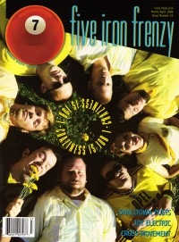

CMnexus
: Contemporary Christian culture, music, and media.
|
|
7ball, Mar / Apr 1999, #23
| Cover |
|---|
|  | | Writers in this Issue |
|---|
Brooks, Thompson
Christopher, Scott W.
Cole, Gregg
Digiprez
Feinberg, Margaret
Gladhill, Thom
Hannah, Jo
Hendrickson, Lucas W.
Kendall, Robert
MacIntosh, Dan
Newcomb, Brian Quincy
Simon, Matt
VanArendonk, Nancy
Well, Chris
|
Cover Feature:
- "Out To Save The World" by Nancy VanArendonk, with Thompson Brooks
Article:
- "Listen Up" by Lucas W. Hendrickson
- "Electronic Rock" by Dan MacIntosh
News Item:
- "5 Minute Walk Celebrates"
Bankshots:History:Album Review:
- Flight 180 - Crackerjack by Chris Well
- Ty Tabor - Moonflower Lane by Scott W. Christopher
- Jesse & the Rockers - T.I.N. by Gregg Cole
- Stir - Broken Tongues by Chris Well
- various artists - Street Life, Not Death by Digiprez
blah, blah, blah: "Our Caped Crusaders and Cover Stories" by Chris Well
This issue of 7ball came bundled with GAS #12. |
|